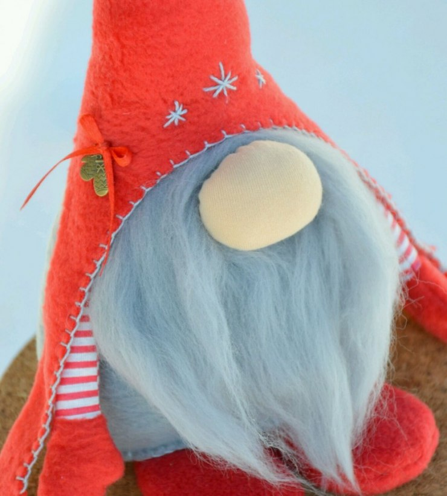

Предлагаю сотворить немного волшебства. С гномами мы знакомы с детства из книг и мультфильмов. Их невероятное множество, с разными колпачками, бородами, в разных одеждах и невообразимых башмачках.
Способов изготовления, как и материалов, из которых можно сделать гнома множество. Нам потребуется:
Выкройки берем из сети или рисуем сами, тогда ваш гном будет единственный и неповторимый. На выкройки может уйти до двух часов и более, если вы относитесь к работе с некоторой педантичностью. Так же при построении выкроек следует брать во венимание каким методом вы будете шиить своего гнома - на швейной машинке или же руками. То есть делать припуски на швы или нет.
В таблице приведен расход материалов для гнома размером 20-24 см в высоту и 23-25 в объеме снизу.
| цвет | количество |
| фетр красный | 2 листа А4 |
| фетр сиреневый | 1 лист А4 |
| фетр зеленый | 1 лист А4 |
| фетр белый | кусок 10х10 см |
| фетр разноцветный | кусочки 10х10 и 15х20 см |
Нитки потребуются таких же цветов, что и фетр. Или же можно сделать строчки других цветов, тем самым придав оригинальность и индивидуальность гному. С мехом для бороды работать сложно, но есть хитрости, которые облегчат работу. Варежки и сапожки или туфельки можно сделать съемными, но на это у вас уйдет еще как минимум пара часов работы и будет считаться высшим пилотажем!
